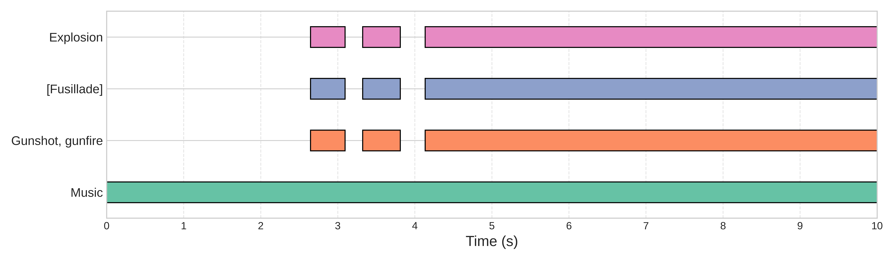
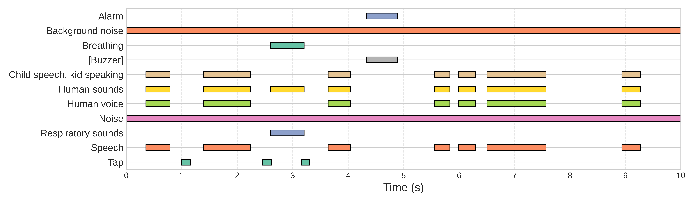
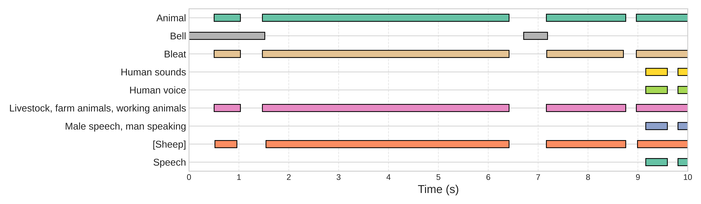
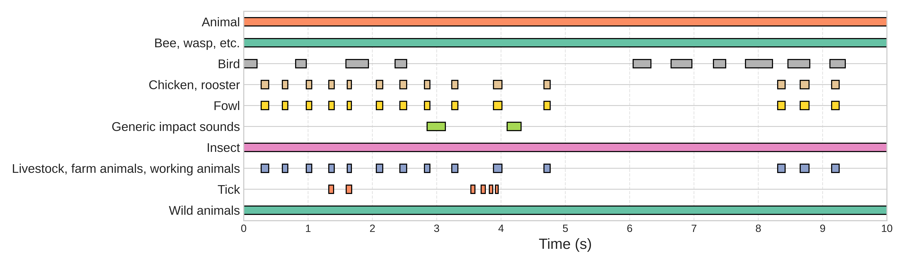
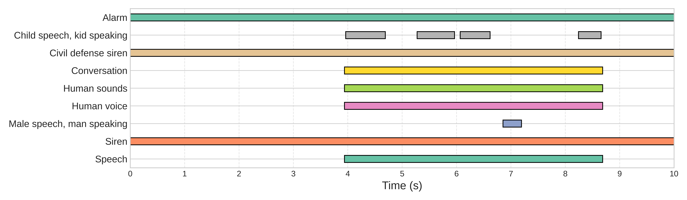

Detect Any Sound: Open-Vocabulary Sound Event Detection with Multi-Modal Queries
📝 Abstract
Most existing sound event detection (SED) algorithms operate under a closed-set assumption, restricting their detection capabilities to predefined classes. While recent efforts have explored language-driven zero-shot SED by exploiting audio-language models, their performance is still far from satisfactory due to the lack of fine-grained alignment and cross-modal feature fusion. In this work, we propose the Detect Any Sound Model (DASM), a query-based framework for open-vocabulary SED guided by multi-modal queries. DASM formulates SED as a frame-level retrieval task, where audio features are matched against query vectors derived from text or audio prompts. To support this formulation, DASM introduces a dual-stream decoder that explicitly decouples event recognition and temporal localization: a cross-modality event decoder performs query-feature fusion and determines the presence of sound events at the clip-level, while a context network models temporal dependencies for frame-level localization. Additionally, an inference-time attention masking strategy is proposed to leverage semantic relations between base and novel classes, substantially enhancing generalization to novel classes. Experiments on the AudioSet Strong dataset demonstrate that DASM effectively balances localization accuracy with generalization to novel classes, outperforming CLAP-based methods in open-vocabulary setting (+ 7.8 PSDS) and the baseline in the closed-set setting (+ 6.9 PSDS). Furthermore, in cross-dataset zero-shot evaluation on DESED, DASM achieves a PSDS1 score of 42.2, even exceeding the supervised CRNN baseline.

📋 Features
- Open-Vocabulary Event Detection: DASM supports detecting any sound event theoretically, even those not present in the training set.
-
Dual-Modal Event Query
- text query: natural language descriptions (e.g., "Sound of cats");
- audio query: audio clips containing the target event. Several minutes of audio containing the queried event is sufficient to produce a representative query vector.
- Fine-Grained Detection: precise temporal localization with the resolution up to 50 frames per second.
🔎 Demo
| Prediction (Text Query💬) | Prediction (Audio Query🔊) | Ground Truth |
|---|---|---|
|  | ||
|  | ||
|  | ||
|  | ||
|  |